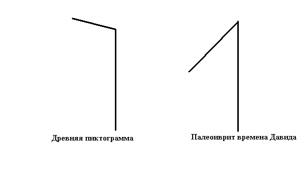
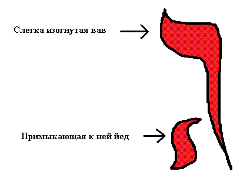

Гимел (ג)
Гимел — третья буква еврейского алфавита, символизирующая источник Божественного света. После осознания Творца и Его обители мы переходим к пониманию «источника Божьего света». По традиции гимел изображает богача, желающего одарить бедняка, что отражает суть благотворительности и дара.
Древняя пиктограмма

Древнее начертание гимел изображает человека, склонившегося над нуждающимся. Это символизирует момент духовного обращения к Богу, когда открываются небеса и начинается поток благословений. Как сказано в Писании:
«Доныне вы ничего не просили во имя Мое; просите, и получите, чтобы радость была совершенна» (Иоанн 16:24).
Современное начертание

В современном иврите буква гимел состоит из двух элементов: вав, склоняющегося как древняя пиктограмма, и йод снизу слева. Нижняя йод символизирует Божественную искру внутри человека.
Этимология и значения

Примеры слов
Основные значения корня גמל (гамал):
- верблюд
- мост
- благотворительность
Заключение
Таким образом, буква гимел открывает источник для получения награды. Если вы решились следовать за гимел, то переходим к следующей ступени — двери.